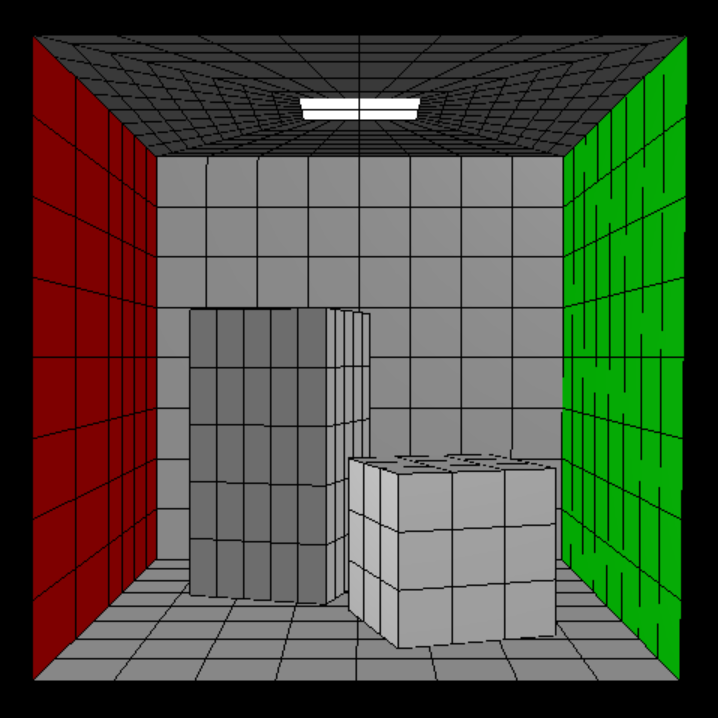

Progressive Refinement Radiosity
Table of Contents
About
Radiosity is a global illumination technique for diffuse surfaces. Since the result is view independent, once computed, it can be rendered for any view.
This technique requires the model to be first subdivided into shooter (left image) and gatherer (right image) quads/patches. A shooter quad shoots light energy to all other quads, while a gatherer quad gathers light energy from all other quads. Gatherer quads can be the same size as shooter quads or smaller.
Radiosity is then defined to be the light power leaving per unit area of the surface quad, and light power is the sum of emitted and reflected energy of a surface quad.
, where Bi is the radiosity of quad i, Ei is the emission of quad i, Ri is the reflectivity of quad i, and Fij is the form factor from quad i to quad j. Form factor Fij is defined to be (energy leaving quad i that strikes j directly) / (energy leaving surface i in all directions in the hemispherical space surrounding i) , and it can be approximated by the Hemicube algorithm which uses the sum of delta form factors to find an approximation.
The progressive refinement radiosity algorithm involves the following steps:
- Find shooter quad i with the greatest unshot radiosity
- Use the Hemicube algorithm to compute form factors from shooter quad i to all other gatherer quads
- Update the radiosity of each of the gatherer quads, and the unshot radiosity of each of the the shooter quads
- If the new greatest unshot radiosity is below a threshold, stop the algorithm else go back to step 1
Hence after each iteration, the scene will get gradually brighter. And after radiosity is computed, vertex radiosities are calculated from the quad radiosities to produce smoother results.
Installation
There are 3 projects in this assignment:
- QuadsViewer: Shows subdivision of input quads into smaller shooter quads and even-smaller gatherer quads
- RadiositySolver: Computes radiosity solution for the scene and vertex radiosities from quad radiosities
- RadiosityViewer: Shows scene output by RadiositySolver
Do note that this was a school assignment and part of the code was provided as a template by the course.
The code and instructions for installation are located on GitHub at https://github.com/clarlzx/Radiosity.
Credits
NUS CS4247 Teaching Team